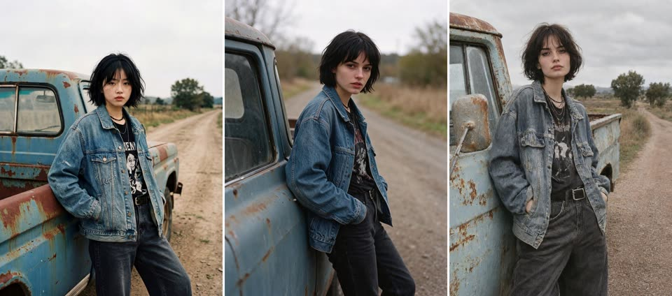

Same denim-on-denim indie editorial in three image models: oversized faded jacket, band tee and charcoal jeans against a rusty pickup on a dirt road

A three-way still test of one wardrobe-led editorial prompt (MiniMax H3 image, Seedream 5.5, GPT Image 2.6): a woman with a messy black bob leans on a rusty light-blue pickup in an oversized faded denim jacket, black vintage band tee, layered black necklaces, belt and loose charcoal jeans, hands in pockets, framed mid-thigh up on a 3:4 portrait. The prompt spells out fabric wear ("worn fabric and realistic stitching"), styling layers and a 35mm early-2000s indie-film look. Useful for comparing how models render denim texture and layering. Note: the MiniMax H3 image renders an East Asian woman although the prompt asks for a European one.
Prompt
Create an ultra-realistic 8K editorial fashion photograph of a young European woman standing casually beside an old, weathered vintage pickup truck on a deserted countryside dirt road. Character appearance: A young European woman with pale natural skin, delicate facial features, subtle freckles, deep brown eyes, and a short messy black bob haircut with soft, uneven bangs. Her expression is calm, slightly serious, effortless and natural. Outfit: An oversized faded blue denim jacket with worn fabric and realistic stitching, a black vintage graphic band T-shirt underneath, layered black necklaces, a black belt, and loose dark charcoal jeans. Both hands casually tucked into the jacket pockets. Pose and composition: She is leaning her back and hip against the side of an old rusty light-blue pickup truck, standing with one leg slightly bent. Her body is angled naturally while her face looks directly toward the camera. Capture her from approximately mid-thigh upward, with the truck occupying the left side of the frame. Environment: A quiet rural countryside setting with an old dirt road extending into the distance, dry grass, scattered trees, and an overcast pale grey sky. The pickup truck has faded blue paint, visible rust patches, dusty windows, and authentic vintage wear. Photography style: Authentic 35mm analog film photography, early 2000s European indie-film aesthetic, muted earthy colors, soft natural overcast daylight, subtle film grain, realistic skin texture, natural imperfections, soft shadows, documentary-style composition, slightly imperfect candid framing. Image quality: Extremely photorealistic, 8K ultra-high resolution, finely detailed facial features, individual hair strands, realistic denim texture, authentic rust and weathering, professional photography, sharp subject focus, natural depth of field. Important: Preserve realistic human anatomy and natural proportions. No beauty filters, no artificial skin smoothing, no exaggerated makeup, no illustration, no CGI, no text overlays, no watermark. Vertical 3:4 portrait composition.
Our Seedance 2.5 adaptation
[ADAPTED for Seedance 2.5 by Grok Bot; not the creator's prompt. Follows the official BytePlus Seedance 2.5 prompt guide and its official sd25-pe prompt-optimizer skill: parameters only on the API line (not in the prompt body), subject + action + scene, then visuals, camera (move, subject, start, direction, arrival) and sound; only the source's own exclusions are kept.] API: duration 6, ratio 3:4, resolution 1080p (or 4k for a print-grade final), generate_audio true; first_frame = the chosen still. 【Subject】The woman exactly as in the first frame: messy black bob with uneven bangs, oversized faded blue denim jacket with worn stitching, black vintage band T-shirt, layered black necklaces, black belt, loose charcoal jeans, hands in the jacket pockets, leaning on the rusty light-blue pickup on a countryside dirt road under an overcast sky. Outfit, layers and denim wear never change. 【Action】A light gust lifts her bangs and the jacket hem; she shifts her weight off the truck, glances down the road, then looks back into the lens with the same calm, slightly serious expression. 【Camera】Mid-thigh-up framing, 50mm look, a slow push-in from medium to medium close, ending on her face and the necklace layers. 【Visuals】35mm analog film look, early-2000s indie-film palette, muted earthy colours, soft overcast daylight, subtle film grain, real skin texture, crisp denim weave and rust. No beauty filter, no text, no watermark. 【Sound】Wind over dry grass, distant birds, a faint creak from the truck body.
Tags: MiniMax H3 image, Seedream 5.5, GPT Image 2.6, model comparison, denim jacket, band tee, layered necklaces, 35mm analog look, rusty pickup, 3:4 portrait